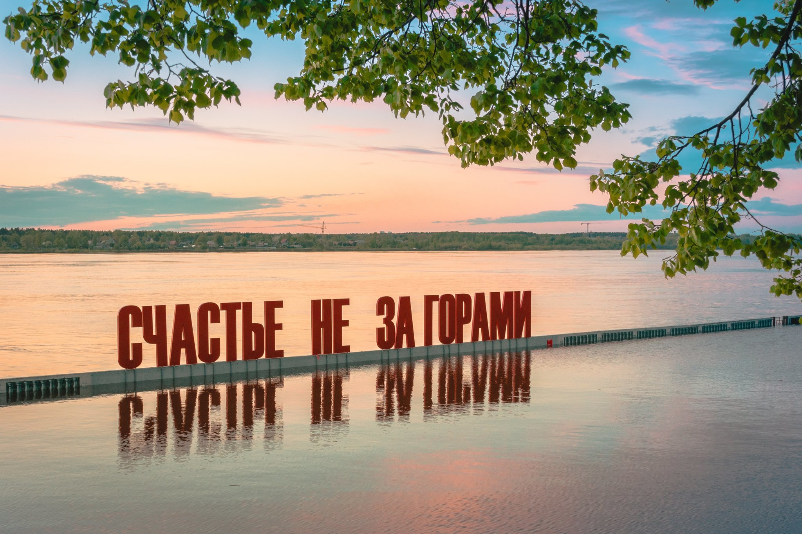
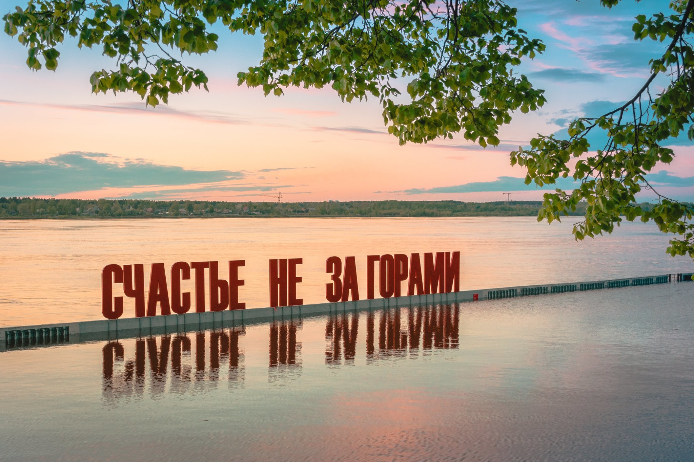

Город пермь
Пермь – старинный город на живописном берегу реки Камы. Он является административным центром Пермского края, простирающегося на западных склонах Уральских гор и служащего мостом между Европейской частью России и Сибирью. Пермь известна не только как один из крупнейших индустриальных городов страны, но и как важный культурный центр Предуралья, привлекающий множество туристов. Здесь путешественников ожидают любопытные музеи, галереи классического и современного искусства, театры. В кварталах исторического центра сохранились памятники архитектуры XIX века. Значительную часть города занимают скверы и парки, где организованы комфортные зоны отдыха.
История города
В 1720 году по приказу Петра I Василий Татищев, управляющий Уральскими казёнными заводами, отправился в Сибирскую губернию для постройки заводов по выплавке меди и серебра. Он выбрал для постройки медеплавильного завода место около деревни Егошихи. 4 мая 1723 года началось строительство завода, и этот день считается днем основания Перми. Были возведены плотина длиной 26 сажен, 6 плавильных печей, рудные амбары, угольный сарай и другие постройки. От завода были проложены дороги на Соликамск и Оханск, а через несколько лет начато строительство Сибирского тракта.
Императрица Екатерина II 16 ноября 1780 года подписала именной указ о создании на основе Егошихинского завода города Пермь - центра Губернии и Пермского наместничеств, состоящего из двух губериний – Пермсокй и Тобольской.
В XIX веке формируется облик современного центра Перми: длинные прямые улицы, двухэтажные дома, железная дорога, парки. Бурное развитие города происходит во второй половине XIX века. С постройкой железной дороги в город пришел крупный капитал, за 50 лет население выросло в 5 раз. Создание пароходного транспорта сделало Пермь одним из самых крупных портов на Каме и перевалочным центром на пути из Сибири в центральную часть России. Пермь становится стратегическим центром Западного Урала. В 1930-е годы в Перми строится один из самых больших авиамоторных заводов СССР, он стал основой для авиакосмической отрасли края. В годы Великой Отечественной войны Пермь стала крупнейшим промышленным центром, поставлявшим оружие, моторы, металлопрокат, а также огромным госпиталем.
В 2008 году в Перми открылась выставка современного искусства «Русское бедное», она стала пилотным проектом для музея современного искусства PERMM и послужила отправной точкой культурной революции в Перми. В 2009 году начал реализовываться проект «Пермь — культурная столица», который ставил задачи децентрализации художественной жизни, превращения культуры в ресурс развития региона, нового брендинга территории. Результатом проекта стал рост количества культурных мероприятий в городе, а также числа арт-объектов на улицах Перми.
Погода и условия жизни
Погода
Климат Перми — умеренно континентальный.
Долгота дня изменяется от 6 часов 28 минут до 18 часов 11 минут (приблизительные значения во время солнцестояний).
Среднемесячная влажность воздуха от 60 % в мае до 84 % в ноябре, среднегодовая — 75 %. Годовая норма осадков 638 мм; максимальное количество осадков обычно приходится на июнь-август, а минимальное — на февраль-март. Зимой средняя высота снежного покрова может достигать 60 см. Город оказывает сильное тепловое воздействие на окружающую среду, поэтому климат города отличается от пригородной зоны более высокой среднегодовой температурой.
Самая высокая температура: +37,5 °C (11 июля 2023 года), средняя же температура в промежутке от мая до сентября: +20,1 °C
Самая низкая зарегистрированная температура: −47,1 °C (декабрь 1978 года), однако сейчас такой низкой температуры не бывает, средняя температура в зимнее время: -12 °C
Условия жизни
Плюс для жизни в Перми — это леса, общая площадь городских лесов в Перми занимает почти половину городской территории. Леса не только окружают городскую застройку, создавая зелёное кольцо в пределах городской черты, но и отдельными массивами, лесопарками располагаются в жилых кварталах.
Несмотря на то, что Пермь распологается на берегу реки Камы, по большей части река не пригодна для отдыха, как и другие более мелкие реки. Протекая по территории современного города, малые реки испытывают сильное антропогенное воздействие, оказывающее влияние на их экологическое состояние. Качество воды в них ухудшается при движении от верховьев к низовьям. По химическому составу оно изменяется от 1-го класса до 3-го. Наиболее плохое качество воды — в низовьях рек Ягошихи и Данилихи. Вода там непригодна для питья. Связано это со спуском сточных вод с предприрятий.
Отдыхать и купаться можно в следующих местах:
- Мотовилихинский пруд в Перми;
- река Кама в районе автомоста в Перми (это городской пляж);
- река Сылва в пермском микрорайоне Новые Ляды;
- река Кама в селе Усть-Качка Пермского района, на местном курорте.
Достопримечательности
Парк имени Горького — парк культуры и отдыха, старейший парк в Перми. Располагается в Свердловском районе города и ограничен Комсомольским проспектом и улицами Краснова, Сибирской и Революции.
Ныне парк является одним из мест отдыха жителей и гостей города. В 2006 году в Сочи проводился конкурс «Хрустальное колесо», на котором были представлены парки России, Украины и Казахстана. Пермский парк им. Горького занял на этом конкурсе первое место.
Эспланада — открытая площадь, расположенная между двух центральных улиц Перми (Ленина (Покровской) и Петропавловской), ограниченная с одной стороны зданием Пермского академического театра, с другой — зданием Законодательного собрания.
В 1982 году на площади построили здание пермского драматического театра, в 1985 запустили первый в городе цветомузыкальный фонтан и открыли памятник героям фронта и тыла.
В ночь с 30 апреля на 1 мая 2015 года на эспланаде перед Пермским академическим Театром-Театр запущен новый «поющий» фонтан «Река». Он открылся «симфонией света и воды» в программе «И помнит мир», которая состояла из военно-патриотических песен и завершилась гимном «Мой Пермский край».
Пермская художественная галерея расположена в здании бывшего Спасо-Преображенского собора. Колокольня собора — один из символов города. Она хорошо видна издалека, даже с другого берега реки Камы. Собор заложен в 1798 году, его строительство растянулось на целых 20 лет.
В музее собрана большая коллекция русского искусства XV-XX веков. В неё входит живопись, графика, скульптура, декоративно-прикладное и народное искусство. Особенно интересна Пермская деревянная скульптура XVII — начала XX веков. Многие туристы в первую очередь хотят посмотреть на «деревянных богов». Коллекция была собрана исследователем Николаем Серебренниковым во время экспедиций по сельским храмам севера Пермской области.
Музей пермских древностей. Если вы интересуетесь динозаврами или биологией, то обязательно сходите в этот музей. Здесь выставлены скелеты ящеров пермского периода: древнего крокодила — платиопозавра, амфибии камакопс, хищной зверообразной рептилии диметродона, выглядевшего, как огромная ящерица с парусом на спине, и других. Есть в музее и скелеты животных более поздних эпох: тарбозавра — гигантского хищного динозавра, жившего в меловом периоде; небольшого хищника дейнониха, у которого было по одному огромному когтю на задних лапах; диатримы — хищной нелетающей птицы размером со страуса; древнего бизона.
К сожалению, все скелеты в музее — только копии. Останки динозавров не сохранились настолько хорошо. Единственный настоящий скелет в экспозиции — это мамонт.
Интерактивный музей «Россия — моя история» Это выставка, посвящённая истории России, начиная с древнейших времен до современности. Проект интересен способом своего отображения: это сенсорные экраны и столы, масштабные проекции на стены, дополненная реальность. Всего задействовано более 400 проекторов. История России вместо скучного учебника предстает в виде трёхмерных реконструкций сражений, интерактивных инсталляций, анимированных карт, подборок архивных фото, видеороликов, инфографики, игровых приложений для детей. Выставка показывает, как история Перми связана с историей всей России. Экспозиция разделена на четыре части: «Рюриковичи», «Романовы», «1914-1945 годы» и «1945-2016 годы».
Набережная тянется на 4 км вдоль берега Камы. Прогулку по ней удобнее всего начать от Художественной галереи. Здесь находится уютная ротонда с шестью колоннами и спуск к набережной, где фонари и скамейки оформлены в ретростиле.
Фото-галерея

 
